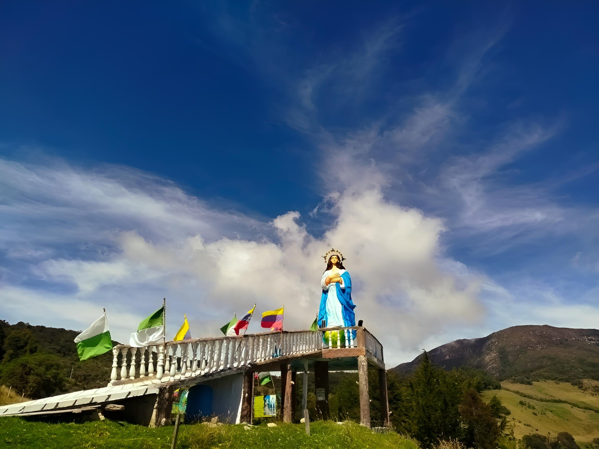

Málaga, capital de la Provincia de García Rovira en Santander, es un municipio que destaca por su identidad cultural, su rica historia y la belleza natural que lo rodea. Ubicada a más de 2.200 metros sobre el nivel del mar, ofrece un clima frío y agradable que contrasta con la calidez de su gente, reconocida por su hospitalidad y tradiciones profundamente arraigadas.
Uno de los lugares más emblemáticos es la Catedral de San Jerónimo, una majestuosa construcción de estilo neoclásico que domina el Parque Principal y se ha convertido en símbolo arquitectónico del municipio. El Parque Andrés Páez de Sotomayor, corazón social de la ciudad, es un punto de encuentro para habitantes y visitantes, rodeado de edificaciones históricas y comercios tradicionales.